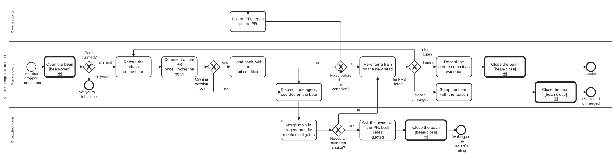

Generated from
cat-harness/processes/sdlc/merge-refusal.bpmnbygen-processes-viz.ts— do not edit here. All processes
Process_MergeRefusal · strict · 10 step(s)
What a merge steward does with a PR it dropped from a merge train: its merge (merge-base.bpmn, run with --no-regen) refused an authored or undeclared conflict, or the train’s combined result failed a gate. Owner, 2026-10-02: “create a new bean (under appropriate epic/story…), hand it back to the sibling (use the agent-to-agent handoff process with a fail condition) for resolution, or dispatch an agent as appropriate.” Bean zacz; the discipline is in merge-conflict-patterns §”When a merge-train member is refused”.
ONE INSTANCE PER REFUSED PR, started with bean: set to the refusal bean. The steward finds or creates that bean BEFORE starting the instance, because creating a bean is the agent’s own beans create call, deduplicated by the PR number in its title; the engine has no create op (bean-lifecycle.bpmn). A second refusal of the same PR loops back into this instance rather than opening a second bean.

| lane | role | what it does here |
|---|---|---|
| Merge steward | session-coordinator |
Coordinator and verifier of the hand-back: records, hands back, takes back when the fail condition fires, and closes. Never edits the bean’s instructions after the executor claims it; later facts go to the PR. |
| Owning session | sibling-session |
The session named in the PR’s Claude-Session: trailer. The executor of the hand-back: claims the refusal bean, fixes the PR, reports on the PR in the bean’s one-line formats. |
| Dispatched agent | authoring-agent |
ONE agent with a modest budget, reached only when no live owner can be. May do what a declared pattern would have done; may NOT decide an authored conflict, which goes to the owner as a question. |
2 of 10 step(s) carry no documentation — activity-documented lists them.
| step | lane | skill / sub-process | what it does |
|---|---|---|---|
Record the refusal on the beanTask_Record |
Merge steward | merge-conflict-patterns |
The PR, the head sha the train used, the train and its other members, each refused path or failing gate and why. A repeat refusal goes under ## Attempts with --body-append. |
Comment on the PR once, linking the beanTask_Comment |
Merge steward | merge-conflict-patterns |
One comment per refused PR, edited in place on every later event. |
Hand back, with a fail conditionTask_HandBack |
Merge steward | merge-conflict-patterns |
The agent-handoff format (#1884): Roles, Report to (the PR), Done when, Fails if. The fail condition: no started line within 4 h, no push within 24 h, the session gone, or blocked on something it cannot settle. One line to the session; the instructions are in the bean. |
Fix the PR, report on the PRTask_Fix |
Owning session | prepare-merge |
Claims the refusal bean, brings main in with merge:main, settles what it refused, pushes. Completed with the outcome fail condition by the steward when the condition fires first. |
Dispatch one agent, recorded on the beanTask_Dispatch |
Merge steward | dispatch-agent |
Before the agent starts: the date, why the fail condition fired, the agent’s id, its budget. Never while the first writer may still be live. Two failed attempts with the same cause go to the owner instead. |
Merge main in, regenerate, fix mechanical gatesTask_AgentFix |
Dispatched agent | merge-conflict-patterns |
Merge commits only; never a force-push. |
Ask the owner on the PR, both sides quotedTask_AskOwner |
Dispatched agent | interaction-modality |
— |
Re-enter a train on the new headTask_Retrain |
Merge steward | merge-conflict-patterns |
The next train is the verifier: the executor’s own log is evidence, not the close. |
Close the bean, merge commit as evidenceTask_Close |
Merge steward | bean-coordination |
— |
Scrap the bean, with the reasonTask_Scrap |
Merge steward | bean-coordination |
The agent’s own beans update --status scrapped; never deleted. |
2 of 4 decision(s) carry no documentation — gateway-documented lists them.
| decision | what decides it | branches |
|---|---|---|
Owning session live?GW_Owner |
no when the session is archived, failed, or unknown to get_session, or the PR names none. |
yes → Hand back, with a fail condition no → Dispatch one agent, recorded on the bean |
Fixed before the fail condition?GW_FailCond |
— | yes → Re-enter a train on the new head no → Dispatch one agent, recorded on the bean |
Needs an authored choice?GW_Authored |
Two siblings editing one bean, one script changed differently on both sides, a budget exceeded only in combination: each is a choice between authors. | yes → Ask the owner on the PR, both sides quoted no → Re-enter a train on the new head |
The PR’s fate?GW_Fate |
— | landed → Close the bean, merge commit as evidence refused again → Record the refusal on the bean closed unmerged → Scrap the bean, with the reason |